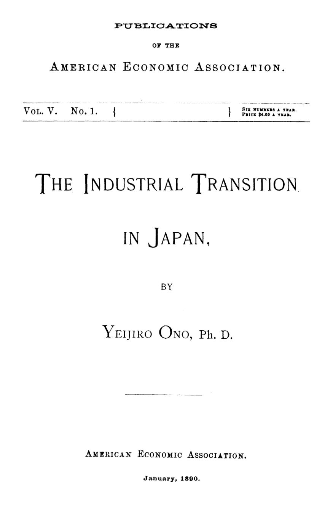

Japão, 1890: instituições modernas sobre uma economia feudal
Leitura: 8 min
Em 1890, o economista Yeijiro Ono descreveu um Japão com Constituição nova e indústria velha, e defendeu livre comércio, tarifa como receita e regras para proteger o operário.


Até cerca de quinze anos antes, quem passasse ao anoitecer por uma rua japonesa ouvia o zumbido ritmado da roda de fiar saindo de quase toda casa das classes baixa e média. Os fios ingleses importados e as primeiras fiações instaladas no país calaram esse som — o mesmo destino, anota o autor, da roda de fiar inglesa do tempo da rainha Ana. A cena abre bem a monografia que a American Economic Association publicou em janeiro de 1890.
O autor é Yeijiro Ono, doutor pela Universidade de Michigan, que assina a nota de abertura em Ann Arbor, em outubro de 1889, agradecendo a orientação de Henry C. Adams. A introdução também é dele, e traz a tese numa frase:
“O Japão está, no presente, apenas meio transformado.” (Japan is at present but half-transformed.)
Instituições políticas modernas — novas leis, uma Constituição, assembleias legislativas previstas para 1890 — tinham sido impostas, diz Ono, a um povo cuja organização industrial continuava feudal. E só a indústria moderna sustenta um governo moderno.
Como funcionava a economia que o feudalismo deixou?
Até cerca de trinta anos antes, o país estava dividido em 64 províncias, cada uma com governo, finanças e moeda próprios. Sob os Tokugawa, os senhores feudais deixavam a família como refém na capital e visitavam o xógum em anos alternados. O comércio entre províncias vizinhas, onerado por pedágios, parecia mais exterior do que doméstico.
A manufatura era doméstica, feita na casa de um mestre artesão. Com ferramentas simples, a habilidade vinha do tempo: no laqueado a ouro, o aprendiz precisava de oito a nove anos de formação, e os segredos de ofício passavam de pai para filho. Havia guildas, à moda da Idade Média europeia; as do chá e do sal chegavam a tentar regular a produção total do país, algo que Ono compara aos trustes modernos.
A exceção era o saquê. Em grandes armazéns trabalhavam muitas vezes duzentos ou trezentos homens, com o dono entrando apenas com capital e supervisão — capitalistas de um lado, assalariados de outro, havia séculos.
O que a Restauração mudou, e o que deixou no lugar?
Depois da Restauração Meiji, a reforma do imposto territorial, de 1873, deu aos lavradores a propriedade legal da terra e trocou o tributo em espécie por um pagamento em dinheiro sobre o “valor legal” do imóvel. Ono a celebra como o início da pequena propriedade, mas calcula que, numa terra de duas safras, o imposto ainda equivalia a um tributo de 16% sobre a renda.
As cidades-castelo, que viviam de abastecer os antigos vassalos, entraram em declínio. Entre 1879 e 1886, Quioto, a antiga capital imperial, caiu de 331.308 para 245.676 habitantes, enquanto Tóquio e o porto de Kobe cresciam.
A mobilidade continuava baixa, e os salários mostram isso. Osaka e Quioto estavam ligadas desde 1877 por uma ferrovia de 27 milhas, mas o trabalhador rural ganhava 5 ienes por mês na primeira e 1 iene e 72 sens na segunda.
Ainda assim, havia pressa: entre dezembro de 1886 e setembro de 1887 nasceram treze companhias ferroviárias.
Quem trabalhava nas fábricas novas, e em que condições?
A primeira ruptura com a manufatura doméstica veio das filaturas de seda, pequenas fábricas movidas sobretudo a roda d’água nas regiões montanhosas, como as províncias de Kai, Mino e Hida. Ali, pela primeira vez, mulheres e crianças trabalhavam lado a lado com homens, pagas segundo as horas trabalhadas. Mulheres e meninas eram a grande maioria; homens adultos, apenas 5% do total.
A jornada ia de nove a catorze horas, sendo doze a mais comum. Como o trabalho era sazonal, as menores abriam só sessenta a cem dias por ano. Ono julga essas condições decididamente desfavoráveis aos trabalhadores.
Nas fiações de algodão, o quadro salarial era pior. Pagavam-se entre 9 e 12 sens por dia a um homem e 6,5 sens a uma mulher, por doze horas de trabalho — abaixo do salário agrícola da mesma localidade, de 22 sens para homens e 15 para mulheres. O balanço do autor é direto:
“O novo sistema ainda não beneficiou muito os trabalhadores.” (the new system has not yet greatly benefitted the workmen.)
Tampouco os donos iam bem: segundo os relatórios oficiais, todas as fiações de algodão, menos três, estavam sem pagar dividendos ou operavam com prejuízo.
Por que abrir o mercado, e quem pagaria a conta?
A proteção, argumenta Ono, só funciona com território extenso, matérias-primas domésticas e demanda interna desenvolvida. O Japão tinha população grande, mas território pequeno e terra cara; produzia apenas um terço do algodão que consumia e nenhuma lã.
Dez libras de chá japonês, que custam talvez dez dias de trabalho, trocam-se por cinquenta jardas de chita feitas em dois dias numa fábrica de Manchester. A saída, para ele, não era fechar o mercado, mas dominar a máquina e produzir para exportação: chá, seda, cobre, carvão, porcelana.
O alvo real são os tratados comerciais, que tiravam do governo o controle da tarifa e, diz Ono, foram impostos pela cobiça da Inglaterra. Sobre fio de algodão e açúcar, o imposto de importação equivalia a cerca de 4,5% ad valorem. Sem essa receita, o peso recaía sobre os agricultores, os menos capazes de pagar.
A proposta é uma troca fiscal: tarifas de pelo menos 30% sobre artigos de conforto e luxo e de 15% sobre bens de consumo geral, como açúcar e querosene. A receita estimada, de cerca de 6 milhões de ienes por ano, serviria para baixar o imposto territorial, a começar pelas terras de arroz.
Na parte final, sobre quem pagaria a conta, o ensaio fica mais original. Na Inglaterra, lembra Ono, a máquina chegou rudimentar a um país de não mais de nove milhões de habitantes e sem concorrência externa, e quem mais sofreu foram os artesãos qualificados. No Japão, com trabalho barato e máquinas já prontas, o golpe cairia sobre o trabalho comum: carregadores, pequenos lojistas e estalajadeiros desalojados pela ferrovia.
Por isso pede duas frentes: mobilidade, com terras novas no Norte e imposto territorial menor, e regulação das relações entre capital e trabalho, porque o excedente de mão de obra manteria baixos os salários das fábricas novas. A lição que tira da Europa industrial é que se deve conceder
“plena liberdade à classe trabalhadora para resistir à opressão egoísta dos capitalistas”. (full liberty should be allowed the laboring class to resist the selfish oppression of capitalists)
Ono não é pessimista. Confia na versatilidade das classes populares e fecha prevendo a passagem do feudalismo à democracia e da vida comunitária ao individualismo.
Na minha leitura
Na minha leitura, o ensaio vale menos pelas previsões do que pelo diagnóstico de coerência: instituições modernas não se sustentam sobre uma base fiscal e produtiva antiga. Um Estado que se moderniza gasta mais e, se só consegue tributar a terra, onera justamente o setor que mais precisaria investir. É um problema de composição tributária, não apenas de tamanho do Estado.
Chama atenção também que um defensor do livre comércio peça regulação do trabalho e liberdade de organização operária. Ono não via contradição: abrir a economia gera ganhos amplos, mas o custo do ajuste se concentra em quem tem menos mobilidade. Política de transição, para ele, era facilitar o deslocamento das pessoas, não deixar tudo por conta da concorrência.
Glossário
- Valor legal
- Base do imposto territorial de 1873: média da colheita de cinco anos, a preços locais, capitalizada.
- Filatura
- Fábrica que desenrola e fia a seda dos casulos; o autor usa o termo italiano filanda.
- Ad valorem
- Tributo calculado como percentual do valor da mercadoria, e não por peso ou quantidade.
- Sen
- Centésima parte do iene, a moeda japonesa.
- Demanda efetiva
- Desejo de consumo acompanhado de poder de compra; Ono usa efficient ou effective demand.
Fontes
- Introduction (pp. 9–15). JSTOR · Internet Archive (PDF)
- The Industrial Transition in Japan (pp. 17–121). JSTOR · Internet Archive (PDF)
- Sumário da edição no JSTOR: Publications of the American Economic Association, vol. 5, nº 1.
Documento em domínio público (EUA, publicado antes de 1931), via JSTOR Early Journal Content e Internet Archive. Resumo e comentário do autor deste site, sem afiliação com a American Economic Association. Encontrou um erro? Escreva: a correção é publicada no próprio texto, com data.
← Nº 22 · Um dólar honesto: a moeda que compra sempre o mesmo Nº 24 · Crianças na linha de produção: dois diagnósticos de 1890 →